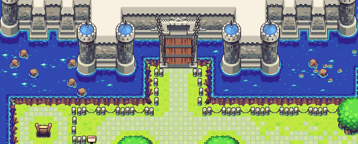
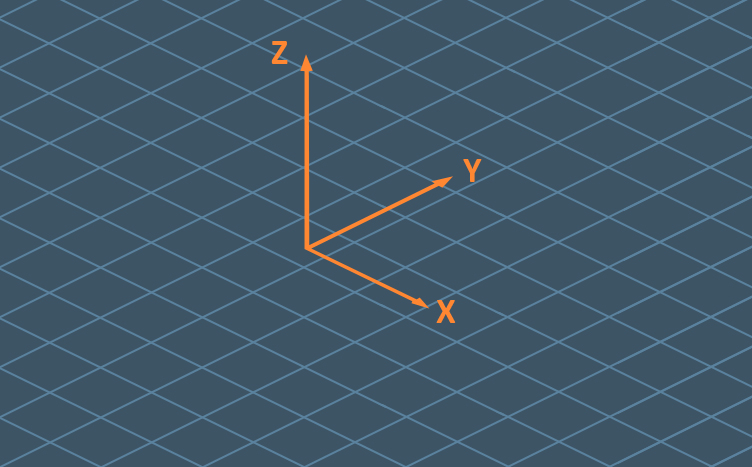
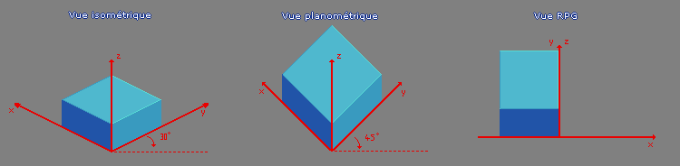
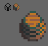
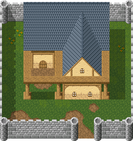
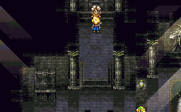
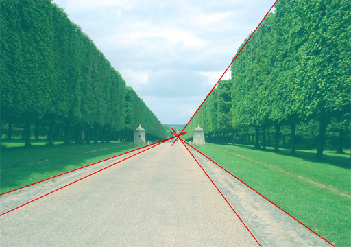
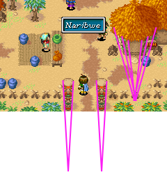
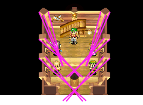

Cours de pixel art 4 : perspectives
Maintenant on va apprendre à dessiner des décors de façon ramenarde. Si si.
La question de la perspective dans les jeux en 2D est une question que personne ne se pose, et c'est sans doute la raison pour laquelle beaucoup de jeux amateurs multiplient les incohérences dans ce domaine. Ce chapitre a pour but d'éclairer un peu votre lanterne sur le sujet, mais il ne traitera cependant que de perspectives RPG-esques. Pour tout ce qui est vue de côté ou vue à la première personne, il faudra aller chercher ailleurs.
Rappelons aux plus distraits d'entre vous que la perspective est « l'art de représenter les objets sur une surface plane (votre écran en l'occurrence) tels qu'ils apparaissent à l'œil de l'observateur. »

Avant de démarrer, je tiens à remercier Lünn sans qui ce chapitre n'aurait ressemblé à rien, puisqu'il s'agit en fait d'une version remise en page d'une conversation que j'ai eue avec lui sur le sujet.
Perspectives — et pourquoi au pluriel ?
Parce qu'il y en a plusieurs pardi ! Si vous avez déjà lu ou pris quelques cours de dessin, vous aurez probablement entendu parler de perspectives à 1, 2 ou 3 points. Ne vous inquiétez pas, car ce n'est pas de cela dont nous allons parler. Vous pouvez donc laisser tout cela de côté pour le moment =)
Dans les jeux vidéos en 2D, les perspectives les plus simples à utiliser sont les axonométries. Qu'est ce donc que cette bête là ? Une axonométrie est une représentation de l'espace dans laquelle un objet peut être repéré par 3 coordonnées (X, Y et Z) qui augmentent selon des droites et de manière constante. Mais une image sera sans doute plus parlante qu'un long discours :

Concrètement, cela signifie que votre perspective est définie par trois axes : Z sera la verticale, alors qu'X et Y seront deux axes qui permettront de « quadriller » le sol. Cela signifie aussi que deux droites parallèles dans la réalité sont représentées par deux droites parallèles en perspective et que la taille d'un objet ne dépend pas de la distance à laquelle il se trouve (les objets plus lointains ne sont pas plus petits, contrairement à une perspective avec un point de fuite par exemple).
La perspective cavalière, la 2D isométrique de jeux comme Final Fantasy Tactics Advance ou encore les vues en coupe utilisées pour les plans en sont des exemples.
Enfin, il existe une infinité de perspectives axonométriques, puisque l'artiste est complètement libre de choisir les trois axes comme il le souhaite. Nous allons maintenant nous intéresser aux trois axonométries les plus couramment utilisées. Hop, image.

Celle de gauche est appelée la perspective isométrique : l'axe Y devrait être incliné de 30° pour correspondre à la définition de la vue isométrique mais puisque ce n'est pas possible de manière simple en pixel art, il est représenté par une droite 1 : 2 (cf. chapitre précédent) et l'angle n'est que de 26,5651° (je vous épargne le calcul qui mène à cette conclusion). Cette vue est particulièrement adaptée aux Tactical RPG, car elle permet de représenter de façon convaincante la profondeur et l'altitude. Elle n'est par contre pas adaptée à la plupart des éditeurs de niveaux classiques (genre RPG Maker) en raison de la forme des tiles.
Celle du centre est la perspective planométrique : l'axe Y est cette fois-ci incliné de 45° par rapport à l'horizontal et est une droite 1 : 1. Très peu de jeux utilisent cette perspective pourtant intéressante et riche en volumes, le plus connu d'entre eux étant Boktai. Cette perspective gagnerait à être répandue, alors il ne tient qu'à vous de vous en servir.
Enfin, la petite dernière (la moins jolie aussi) est la fameuse « vue de trois-quarts » : l'axe Y a encore tourné un peu vers la gauche jusqu'à être confondu avec l'axe Z. Il s'agit de la vue dans laquelle sont faits la plupart des RPG, et c'est d'elle que nous allons parler plus en détail.
Tout sur la vue de trois-quarts.
En théorie, je pourrais m'arrêter ici mais des exemples vous aideront à mieux saisir mon propos.

Commençons par un exemple simple : le baril (élément présent dans tout tileset de ville, village, mine abandonnée, maison, etc. qui se respecte). Que remarquer d'intéressant là-dessus ? LE COUVERCLE EST UN CERCLE. Voui. Pas une ellipse comme on le voit souvent. Il est comme cela pour deux raisons (une seule ne suffirait pas) :
- C'est un cercle dans la réalité du jeu (le couvercle est rond quoi).
- Il est parallèle au sol et donc vu de dessus. De dessus, pas de biais.
Vous retiendrez donc avec application que les plans horizontaux sont représentés comme vus de dessus si l'on veut conserver une perspective de trois-quarts cohérente. Poursuivons avec un exemple un peu plus complet, généreusement fourni par Dyo.

Remarquez avant tout chose que le haut des tourelles est circulaire (comme quoi je ne raconte pas que des conneries). Cela fait, observez la porte, les murs et les fenêtres. Ils sont, ils sont, ils sont (non, ils ne sont pas moches) ? Je vous le donne en mille, ils sont… vus de face ! Voui, purement de face. C'est encore une fois la magie de nos 3 axes qui est à l'œuvre : les plans verticaux sont représentés comme vus de face si l'on veut conserver une perspective de trois-quarts cohérente.
Mais alors, que se passe-t-il si on veut représenter des plans verticaux ET des plans horizontaux ? Et bien, rien de spécial : l'interaction des deux ne pose pas de problème particulier. Regardez les murets en pierre de Dyo, ou bien l'escalier (ou l'armoire, ou les murs) du superbe screenshot de Bahamut Lagoon ci-dessous pour vous en convaincre.

Pour faire court retenez ça : les plans horizontaux sont vus de dessus, les plans verticaux sont vus de face. Voici donc la marche à suivre si vous souhaitez représenter une perspective axonométrique rigoureuse. Néanmoins, il est tout à fait possible de s'écarter un peu des règles, une fois qu'on les a bien assimilées.
Pour les graphismes de base de RPG Maker et un certain nombre de jeux (y compris pro), les graphistes ont choisi de « tricher » et de représenter les cercles (par exemple le couvercle de notre baril ou l'ouverture d'un puits) par des ellipses. On peut trouver ça plus esthétique, mais il faut veiller ne pas en faire trop : les ellipses ne devraient pas être trop écrasées et elles devraient toutes être aplaties de la même façon (la plupart des jeux s'en tirent avec un rapport largeur sur hauteur d'environ un et demi).
Extension possible : des points de fuite souterrains.
Bon, j'espère que vous avez suivi jusqu'ici parce que les choses vont se compliquer un peu. Je vous ai dit en ouverture de ce chapitre de ne pas penser aux histoires de perspectives à un point (ou deux, ou trois). Et bien nous allons maintenant nous en préoccuper un peu.
Un petit rappel visuel ci-dessous suffira sans doute à vous (re)mettre les idées en place pour ce qui est de la perspective à un point. Comme vous pouvez le voir, il existe un point quelque part (pas nécessairement dans l'image) vers lequel semblent converger toutes les lignes qui sont parallèles à la direction du regard du spectateur (ce seraient les lignes verticales sur une carte de la région, pour peu que la photo soit prise vers le Nord et qu'on tienne la carte à l'endroit) : c'est ce qu'on appelle un point de fuite.
Vous n'avez pas besoin d'en savoir plus pour la suite, mais si le sujet vous intéresse, je vous conseille de lire cet excellent cours sur la perspective en dessin — attention c'est en anglais et il faut vous inscrire sur le forum de conceptart.org pour le lire).

Mais revenons à nos moutons : à quoi vont nous servir ces points de fuite ? Et bien à améliorer notre perspective, pardi ! A la différence de l'image montrant une allée du château de Versailles (l'aviez vous reconnu ?), notre point de fuite va attirer les lignes verticales. Dans l'idéal, on aimerait pouvoir fixer un point de fuite quelque part et dessiner notre jeu par dessus, mais ce n'est pas franchement compatible avec les systèmes de tilesets utilisés par les RPG. La solution est d'attribuer un point de fuite personnel à chaque objet de notre tileset. C'est un peu moins élégant mais le résultat est là ! Voici deux screenshots de Golden Sun et Golden Sun 2 qui sont deux des très rares jeux que je connaisse à utiliser cette technique. Pierre a gentiment mis en évidences quelques points de fuite de ces images.


Remarquez que les points de fuite sont tous situés sous les objets (pour qu'ils soient au dessus, il faudrait que la caméra soit sous le jeu ! un nouveau concept ? =D ) et aussi tous à peu près à la même « profondeur » (question de cohérence). Une dernière petite remarque pour la route : plus vos points de fuite se situent en profondeur, plus vous vous rapprochez de la perspective trois-quarts standard (celle décrite au début de ce chapitre), si bien qu'en plaçant votre point de fuite « à l'infini », vous retombez complètement sur la perspective trois-quarts (c'est magique, hein ?).
Maintenant que vous en savez un peu plus sur la perspective, vous n'avez plus d'excuses pour ne pas vous lancer, d'autant plus que les erreurs de perspective ne sont pas trop difficiles à corriger et que vous pouvez tracer des lignes (et des points de fuite si vous tentez la méthode Golden Sun) pour vous aider.
Ajouter un commentaire
Commentaires

Heureusement que je connais le vocabulaire de base mais je suis sûr que beaucoup de personnes ont été largués après avoir lu des mots comme "tileset" dont vous avez oubliez de donner la définition.
Et puis j'ai du mal à comprendre une chose: en quoi ces fameuses tileset handicapent-t-elles la contruction des lignes de fuites dans les RPG ?
Est-ce que si j'ai bien compris, la Nintendo DS à réussie à corriger ce problème avec des backgrounds plus arrondis dans des jeux comme Mario et Luigi voyage au centre de Bowser grâce à l'augmentation de résolution qui débride le rendus sur les axes x/ y ou y / z, ce qui permet des ellipses plus logiques (entre le cercle et l'ovale en s'implantant plus naturellement sur un aspect 3/4) juste en augmentant le nombre de pixels pour chaques sprites ?
P.S: Désolé pour le pavé.
Je trouve que la perspective 3/4 c'est assez bizarre… Celle de golden sun est bien mieux c'est sûr. Résultat j'ai tjrs l'impression que les perspectives sont fausses, notamment dans zelda. Si on voit un barril d'en haut, on voit un rond et c'est tout on voit juste le couvercle logiquement.
Dans zelda, dans les donjons chaque salle ressemble à une cuvette carrée (un plat de cuisine vu d'en haut, un rectangle dans un plus grand rectangle, les sommets reliés par des arrêtes diagonales), la perspective est bonne mais les persos sont plats, ça me choque pas quand j'y joue mais quand je veux faire mes graphismes là ça me pose probleme haha.
Celle de Blood Omen, c'est quoi ? j'dirai 3/4, enfin c'est vue d'en haut mais les persos ne sont pas "plats" c'est à dire de face.
Pour les personnages, vous ne parlez pas de la perspective, c'est dommage (même si le principe est le même mais ça me turlupine quand même)

Hello et bienvenue dans les parages !
RPG Maker n'utilise pas une méthode en particulier, on pourrait aussi bien lui donner un tileset vu de côté et il ne broncherait pas. Pour ce qui est des ellipses (par exemple sur les barriques), c'est théoriquement impossible avec une vue axonométrique. Cela étant, ça n'empêche personne de le faire quand même et les joueurs sont très habitués à le voir.
Je pense que les pixel-artistes de chez Enterbrain ne se sont pas trop posé ce genre de questions existentielles. Le résultat est agréable à l’œil et c'est le plus important.
Hello! Je viens de découvrir ce site. Il est vraiment super parce que n'étant pas, ou très peu initié, j'arrive à tout piger! ^^
Et justement je voulais émettre une réserve sur la cohérence des plans horizontaux de la vue 3/4, je suis justement en train de mapé sur RPG Maker et j'ai devant moi (tout d'abord ce texte… Mais aussi) de très jolis Bariques de bois au dessus éliptique, très cohérent par rapport au reste des éléments. Est-ce que c'est parce que RPG Maker utilise encore une autre méthode?
--Dro.ido
Très bien !
La maison qui clignote me fait penser au bug classique des mappeurs :
L'intérieur des maisons sont plus grandes qu'à l'extérieur.
Parfois même on se déplace dans une multitude de caves et/ou greniers.
(On se demande comment ça tient tout ça ^^)
--Yarflam
Très sympa.
A noter que la perspective utilisée dans le second screen de Golden Sun (ou 2) est une perspective dite "en arrête de poisson". C'est à dire que les droites convergent vers des points pouvant tous être contenus dans une droite verticale. Cette technique était notamment utilisée dans les fresques de l'avant Renaissance. =)
--Diamonds